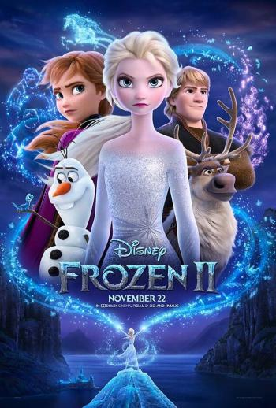

1. END GAME (YULLI NISIA)
Avengers: Endgame is a 2019 American superhero film based on the Marvel Comics superhero team the Avengers, produced by Marvel Studios and distributed by Walt Disney Studios Motion Pictures. It is the sequel to 2012's The Avengers, 2015's Avengers: Age of Ultron, and 2018's Avengers: Infinity War, and the twenty-second film in the Marvel Cinematic Universe (MCU). It was directed by Anthony and Joe Russo and written by Christopher Markus and Stephen McFeely, and features an ensemble cast including Robert Downey Jr., Chris Evans, Mark Ruffalo, Chris Hemsworth, Scarlett Johansson, Jeremy Renner, Don Cheadle, Paul Rudd, Brie Larson, Karen Gillan, Danai Gurira, Benedict Wong, Jon Favreau, Bradley Cooper, Gwyneth Paltrow, and Josh Brolin. In the film, the surviving members of the Avengers and their allies attempt to reverse the damage caused by Thanos in Infinity War.
The film was announced in October 2014 as Avengers: Infinity War – Part 2, but Marvel later removed this title. The Russo brothers joined as directors in April 2015, with Markus and McFeely signing on to write the script a month later. The film serves as a conclusion to the story of the MCU up to that point, ending the story arcs for several main characters. Filming began in August 2017 at Pinewood Atlanta Studios in Fayette County, Georgia, shooting back-to-back with Infinity War, and ended in January 2018. Additional filming took place in the Metro and Downtown Atlanta areas, New York, Scotland, and England. The story revisits several moments from earlier films, bringing back actors and settings from throughout the franchise as well as music from previous films. The official title was revealed in December 2018. With an estimated budget of $356 million, it is one of the most expensive films ever made.
Avengers: Endgame was widely anticipated, and Disney backed the film with Marvel's largest marketing campaign. It premiered in Los Angeles on April 22, 2019, and was theatrically released in the United States on April 26. The film received praise for its direction, acting, musical score, action sequences, visual effects, and emotional weight, with critics lauding its culmination of the 22-film story. It grossed nearly $2.8 billion worldwide, surpassing Infinity War's entire theatrical run in just eleven days and breaking numerous box office records, including becoming the highest-grossing film of all time.

2.CRAZY RICH ASIANS (SYAHLA ARFIAN)
Crazy Rich Asians is a 2018 American romantic comedy film directed by Jon M. Chu, from a screenplay by Peter Chiarelli and Adele Lim, based on the 2013 novel of the same name by Kevin Kwan. The film stars Constance Wu, Henry Golding, Gemma Chan, Lisa Lu, Awkwafina, Ken Jeong, and Michelle Yeoh. It follows a Chinese-American professor who travels to meet her boyfriend's family and is surprised to discover they are among the richest in Singapore.
The film was announced in August 2013 after the rights to the book were purchased. Much of the cast signed on in the spring of 2017, and filming took place from April to June of that year in parts of Malaysia, New York City, and Singapore. It is the first film by a major Hollywood studio to feature a majority cast of Asian descent in a modern setting since The Joy Luck Club in 1993. Despite praise for that, the film did receive some criticism for casting biracial actors over fully ethnically Chinese ones in certain roles. Additional criticisms were directed at the film for failing to have non-Chinese Singaporean ethnic groups notably Malay and Indian actors as characters.
Crazy Rich Asians premiered on August 7, 2018, at the TCL Chinese Theatre in Los Angeles and was released theatrically in the United States on August 15, 2018, by Warner Bros. Pictures. The film received positive reviews from critics, with praise for its acting, production and costume design. The film grossed over $238 million worldwide, making it the highest grossing romantic comedy in a decade. The film received numerous accolades, including at the 76th Golden Globe Awards earning nominations for Best Motion Picture Musical or Comedy and Best Actress Motion Picture Comedy or Musical for Wu. It also received four nominations at the 24th Critics' Choice Awards, winning one for Best Comedy, and a Screen Actors Guild Award for Outstanding Performance by a Cast in a Motion Picture at the 25th Screen Actors Guild Awards. Two sequels, based on the novel's follow-ups China Rich Girlfriend and Rich People Problems, are currently in development.

3. Frozen 2 (by Anggita Chaerani)
Frozen 2, one of the most beautifully animated films of the decade, filled with stunning visual pyrotechnics and incredible attention to detail.
From the Academy Award®-winning team—directors Jennifer Lee and Chris Buck, producer Peter Del Vecho and songwriters Kristen Anderson-Lopez and Robert Lopez—and featuring the voices of Idina Menzel, Kristen Bell, Jonathan Groff and Josh Gad, Walt Disney Animation Studios’ “Frozen 2” opens in U.S. theaters on Nov. 22, 2019.
A little sneak peek: Why was Elsa born with magical powers? The answer is calling her and threatening her kingdom. Together with Anna, Kristoff, Olaf and Sven, she'll set out on a dangerous but remarkable journey. In "Frozen," Elsa feared her powers were too much for the world. In "Frozen 2," she must hope they are enough.

4. Habibie and Ainun (by Desy Rafika Intan Sembiring)
Habibie & Ainun is an Indonesian biopic drama film which was released on December 20, 2012. The film stars Reza Rahardian, Bunga Citra Lestari and Tio Pakusadewo. At its launch, the film was witnessed by the 6th President of the Republic of Indonesia, Susilo Bambang Yudhoyono, accompanied by the Governor of the 16th Special Capital Region of Jakarta, Joko Widodo, and by the film's main character himself, the 3rd President of the Republic of Indonesia, Bacharuddin Jusuf Habibie . The film is based on a memoir written by Habibie about the story of his life with his late wife, Hasri Ainun Habibie, in the book Habibie and Ainun.
Rudy Habibie is an aircraft genius who has a big dream: to serve the Indonesian people by making airplanes to unite Indonesia. While Ainun is a bright young doctor with a wide open career path for him.
In 1962, these two junior high school friends met again in Bandung. Habibie fell in love with Ainun who was as sweet as sugar to him. But Ainun, he not only fell in love, he had faith in Habibie's visions and dreams. They married and flew to Germany.
Having a dream will never be easy. Habibie and Ainun know that. Their love awakens on the journey to realize dreams. The cold German snow, sacrifice, pain, solitude and the temptation of wealth and power when they returned to Indonesia accompanied the journey of two lives into one.
For Habibie, Ainun is everything. Ainun is the eye to see his life. For Ainun, Habibie is everything, a filler of love in his life. But every story has an end, every dream has a limit.